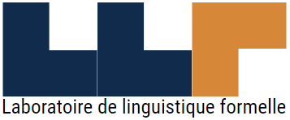

| Home | Abstract Submission | Registration | Program | Contact |
AMLaP 2021 will take place on September 2-4. We will follow the format of this year’s CUNY conference with a main session with 30 min slots (20 min talk, 10 min discussion) and thematically organized parallel sessions with short (5 min) talks followed by a group discussion. These parallel sessions will replace poster sessions.
Important update: We originally planned to host AMLaP as a hybrid conference with on-site participation, we have decided to cancel the in-person component in light of the recent rise in COVID-19. AMLaP will instead be held in an online-only format. If you have any questions, please email us at amlap2021@softconf.com
Other topics relevant to the conference include, but are not limited to:
bilingual language processing; computational models, symbolic and connectionist; corpus-based studies and statistical mechanisms; cross-linguistic studies; dialogue processing; discourse; language comprehension; language production; lexical processing; learning mechanisms; models of acquisition; neurobiology of language processing; parsing and interpretation; processing of prosodic structure
Giuseppina Turco, Gabriel Thiberge, Céline Pozniak, Till Poppels, Barbara Hemforth, Saveria Colonna, Anne Abeillé
AMLaP 2021 will be sponsored by Université de Paris, Université Paris 8, Laboratoire de Linguistique Formelle, Structures Formelles du Langage, LabEx Empirical Foundations of Linguistics.
|  |
|
|
|||
| © Conference Organizers | |||||